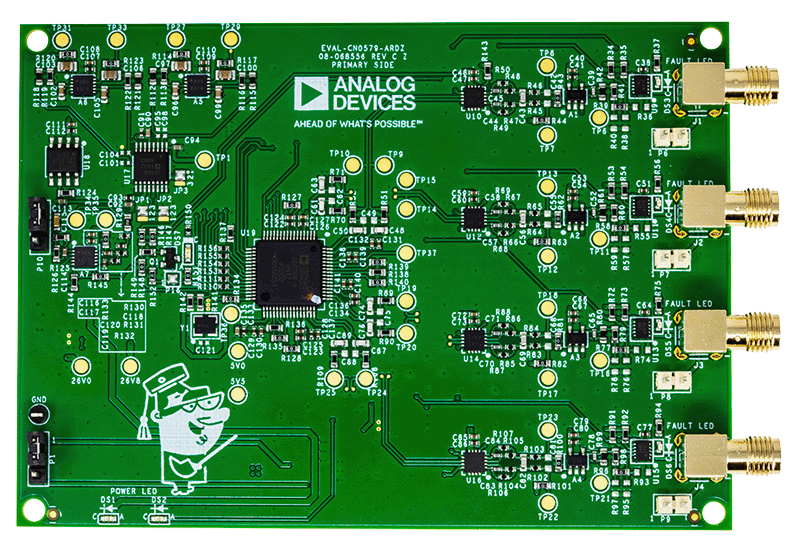

Condition-based monitoring (CbM) enables early detection and diagnosis of
machine and system abnormalities. Identifying and isolating these issues creates
opportunities for optimizing replacement part inventories, scheduling downtime
for planned maintenance, and making run-time process adjustments that can extend
the life of equipment.
The EVAL-CN0579-ARDZ is a 4-channel, high resolution, wide
bandwidth, high dynamic range, IEPE-compatible interface data acquisition
(DAQ) system that interfaces with IC piezoelectric (ICP®)/IEPE sensors. While
most solutions that interface with piezoelectric sensors in the market are
AC-coupled and lack DC and subhertz measurement capabilities, this solution is
DC-coupled. By looking at the complete data set from an IEPE vibration sensor
in the frequency domain (DC to 50 kHz), the type and source of a machine fault
can be better predicted using the position, amplitude, and number of harmonics
found in the fast Fourier transform (FFT) spectrum.
Simplified Block Diagram
Hardware Configuration
Primary Side

Sensor Input
The main input on the EVAL-CN0579-ARDZ are right-angle
SMA connectors on the primary side of the board, as such it is
highly recommended to connect the sensor using an SMA cable. If this is not
possible, due to the type of sensor or otherwise, use the headers to connect
the board with other standard wires.
LED Indicators
LED
Location
Function
PWR LEDs (DS1 to
DS2)
bottom-left corner
indicates board power
FAULT LEDs (DS3 to
DS6)
near each SMA connector
indicates the status of
switch’s fault flag
SHUTDOWN LED (DS7)
left side of U19
indicates status of
shutdown logic/buffer,
FDA, SW disable
Secondary Side
Current Source Jumper
The EVAL-CN0579-ARDZ includes solder jumpers (P17 to P20) to
control current source. The jumpers connect the current source to the circuit
and may be removed for testing without a current source.
Arduino Interface
All connector pinouts for the EVAL-CN0579-ARDZ are described in
the table below.
Connector
Pin No.
Pin Name
CN0579 Pin Function
Arduino DIO 1 (P12)
1
SCL
SCL
2
SDA
SDA
3
AREF
NC (Not connected)
4
GND
GND
5
13 / SCLK
SCLK
6
12 / MISO
MISO
7
11 / PWM / MOSI
MOSI
8
10 / PWM / CS
CS_ADC
9
9 / PWM
DRDY_N
10
8
DCLK
Arduino DIO 0 (P14)
1
7
DOUT0
2
6 / PWM
DOUT1
3
5 / PWM
DOUT2
4
4
DOUT3
5
3 / PWM
SHUTDOWN_N
6
2
RESET_N
7
TX
NC
8
RX
NC
Arduino Analog (P13)
1
AIN0
NC
2
AIN1
NC
3
AIN2
NC
4
AIN3
NC
5
AIN4
NC
6
AIN5
NC
Arduino Power (P11)
1
NC
NC
2
IOREF
IOREF
3
RESET
NC
4
3.3 V
3V3
5
5V
5V
6
GND
GND
7
GND
GND
8
Vin
NC
Tip
To achieve reasonable noise measurements, the piezo
vibration sensor must be stabilized using either an active shaker table, which
cancels environmental vibrations; or anchored to a massive object, which makes
sensor still. For noise measurements done on EVAL-CN0579-ARDZ,
the piezo vibration sensor was anchored to a massive object, where it is also
connected directly to the input of the signal chain.
Test Points
The board also has many test points, most of which are labeled and are fairly
self-explanatory. The table below describes some of the most significant test
points and their connections.
Test Point
Description
26V8
Connects to the 26.8V rail before it’s reduced
to 26V.
26V0
Connects to the 26V rail.
5V5
Connects to the 5.5V rail before it’s reduced
to 5V.
5V0
Connects to the 5V rail.
TP1
Connects to the voltage reference of the DAC
for IEPE sensor.
TP6 / TP11 / TP16 / TP21
Connects to signal chain after passing through
the fault protection switch
TP7 / TP12 / TP17 / TP22
Connects to VOCM.
TP8 / TP13 / TP18 / TP23
Connects to signal chain that is level shifted.
TP9 / TP14 / TP19 / TP24
Connects to FDA_OUT_N0 of the ADC driver.
TP10 / TP15 / TP20 / TP25
Connects to FDA_OUT_P0 of the ADC driver.
TP27 / TP29 / TP31 / TP33
Connects to output from the bias voltage
correction.
TP34
Connects to ADC reference buffer.
TP35
Connects to differential conversion reference
buffer output / VOCM.
TP36
Connects to 32.768 MEGHz clock output.
TP37
Connects to VCM of ADC.
System Setup
General Setup Using DE10-Nano
Demo Requirements
The following is the list of items needed in order to replicate this demo.
Download the latest IIO Oscilloscope
from GitHub and install it on your PC. (You may need to right-click the
installer and run as Elevated in order to get it to install.)
Once microSD card has been imaged, safely remove the hardware from the SD
card writer, and insert the card directly into the microSD card slot on the
DE10-Nano.
General Setup Using Cora Z7
Demo Requirements
The following is the list of items needed in order to replicate this demo.
Download the latest IIO Oscilloscope
from Github, and install it on your PC. (You may need to right-click the
installer, and run as Elevated in order to get it to install.)
Once the microSD card has been imaged, safely remove the hardware from the SD
card writer, and insert the card directly into the microSD card slot on the
DE10-Nano.
Application Software
The EVAL-CN0579-ARDZ is supported by the Libiio library. This
library is cross-platform (Windows, Linux, Mac) with language bindings for C,
C#, Python, MATLAB, and others. Two easy examples that can be used with the
EVAL-CN0579-ARDZ are:
To be able to connect your device, the software must be
able to create a context. The context creation in the software depends on the
backend used to connect to the device, as well as the platform where the
EVAL-CN0579-ARDZ is attached. The platforms currently supported for the
EVAL-CN0579-ARDZ are Cora Z7 and DE10-Nano using the ADI
Kuiper Linux. The user needs to supply a URI, which will be used in the
context creation. The Libiio is a library for interfacing with IIO devices.
The iio_info command is a part of the libIIO package that reports
all IIO attributes.
Upon installation, simply enter the command on the terminal command line to
access it.
For Windows machine connected to ZedBoard via Ethernet cable
Using SSH Terminal Software
Open SSH Terminal Software (PuTTY, TeraTerm, or similar). The user should now
start the PuTTY application and enter certain values in the configuration
window. In the terminal, run:
~$
iio_info-uip:<ip_address>
Using Command Terminal
~$
iio_info-s
Prompting this on the command terminal in your Windows PC will give you the
IP address to access the EVAL-CN0579-ARDZ.
ssh analog@<ip_address>
~$
iio_info-uip:<ip_address>
IIO Commands
There are different commands that can be used to manage the device being used.
The iio_attr command reads and writes IIO attributes.
~$
iio_attr[OPTION]...
Example:
To look at the context attributes, enter this code on the terminal:
~$
iio_attr-a-C
IIO Oscilloscope
Download
Make sure to download/update to the latest version of IIO Oscilloscope
release.
Once done with the installation or an update of the latest IIO Oscilloscope,
open the application. The user needs to supply a URI, which will be used in
the context creation of the IIO Oscilloscope and the instructions can be seen
in the previous section.
Press refresh to display available IIO Devices. Once cn0579 appeared, press
Connect.
Debug Panel
Below is the Debug panel wherein you can directly access
the attributes of the device.
DMM Panel
Access the DMM panel to see the instantaneous reading of the ADC voltages.
Pyadi-IIO
PyADI-IIO is a Python abstraction module for ADI hardware
with IIO drivers to make them easier to use. This module provides device-specific APIs
built on top of the current libIIO Python bindings. These interfaces try to match
the driver naming as much as possible without the need to understand the complexities
of libIIO and IIO.
Running the Example
After installing and configuring PYADI-IIO on your
machine, you are now ready to run Python script examples. In our case, run the
PyADI-IIO CN0579 example.